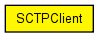
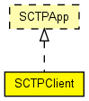

(no description)
The following diagram shows usage relationships between types. Unresolved types are missing from the diagram. Click here to see the full picture.
The following diagram shows inheritance relationships for this type. Unresolved types are missing from the diagram. Click here to see the full picture.
| Name | Type | Default value | Description |
|---|---|---|---|
| address | string | "" |
may be left empty ("") |
| port | int | 0 |
port number to listen on |
| connectAddress | string |
server address (may be symbolic) |
|
| connectPort | int |
port number to connect to |
|
| startTime | double | 1s |
time first session begins |
| numRequestsPerSession | int | 1 |
number of requests sent per session |
| numPacketsToReceive | int | 0 | |
| requestLength | int | 1452 |
length of a request (bytes) |
| thinkTime | double | 0s |
time gap between requests |
| waitToClose | double | 0s |
time to wait between last message sent and abort |
| reconnectInterval | double | 0 |
if connection breaks, waits this much before trying to reconnect |
| inboundStreams | int | 17 | |
| outboundStreams | int | 1 | |
| echoFactor | int | 0 | |
| ordered | bool | true | |
| queueSize | int | 0 | |
| stopTime | double | 0s | |
| primaryTime | double | 0s | |
| newPrimary | string | "" | |
| finishEndsSimulation | bool | false |
| Name | Direction | Size | Description |
|---|---|---|---|
| sctpIn | input | ||
| sctpOut | output |
simple SCTPClient like SCTPApp { parameters: string address = default(""); // may be left empty ("") int port = default(0); // port number to listen on string connectAddress; // server address (may be symbolic) int connectPort; // port number to connect to double startTime @unit(s) = default(1s); // time first session begins volatile int numRequestsPerSession = default(1); // number of requests sent per session int numPacketsToReceive = default(0); int requestLength = default(1452); // length of a request (bytes) double thinkTime @unit(s) = default(0s); // time gap between requests double waitToClose @unit(s) = default(0s); //time to wait between last message sent and abort double reconnectInterval @unit(s) = default(0); // if connection breaks, waits this much before trying to reconnect int inboundStreams = default(17); int outboundStreams = default(1); int echoFactor = default(0); bool ordered = default(true); int queueSize = default(0); double stopTime @unit(s) = default(0s); double primaryTime @unit(s) = default(0s); string newPrimary = default(""); bool finishEndsSimulation = default(false); gates: input sctpIn; output sctpOut; }